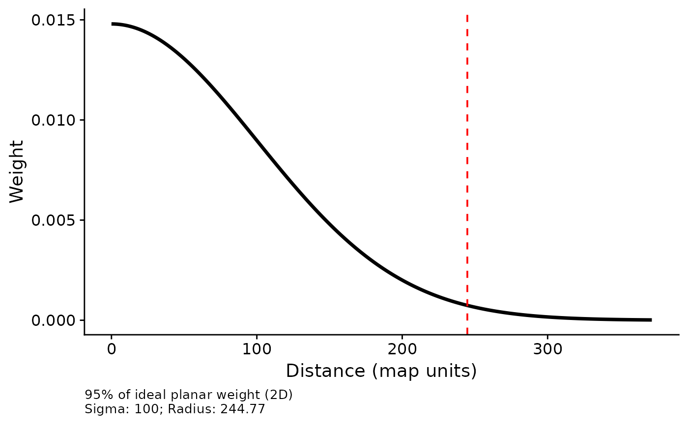
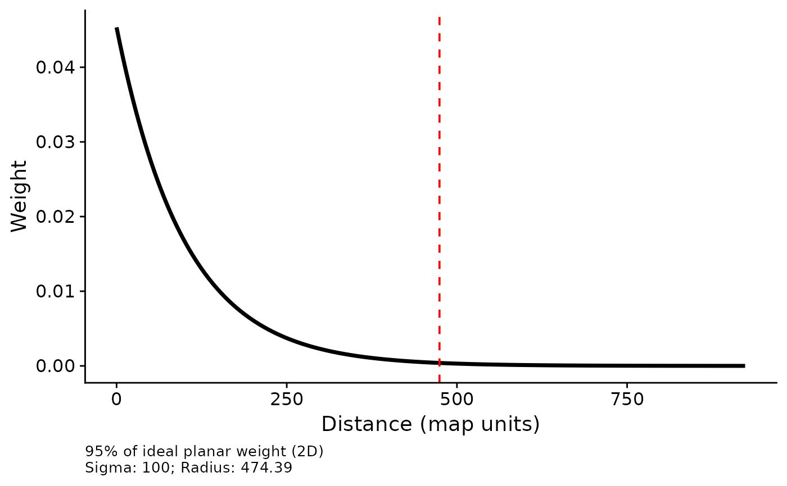
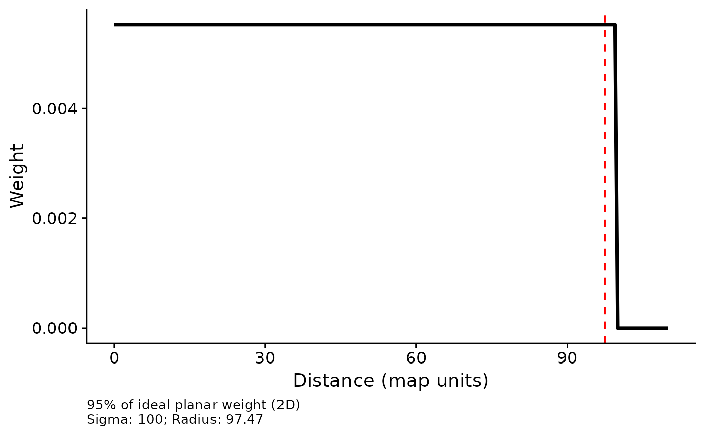
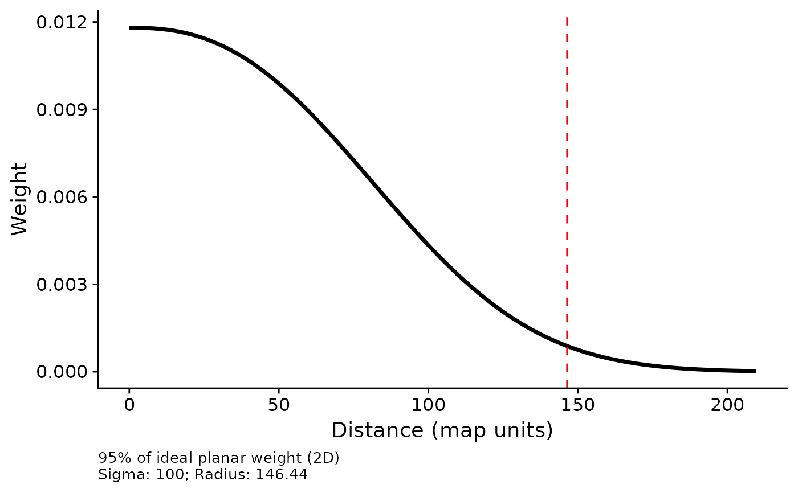
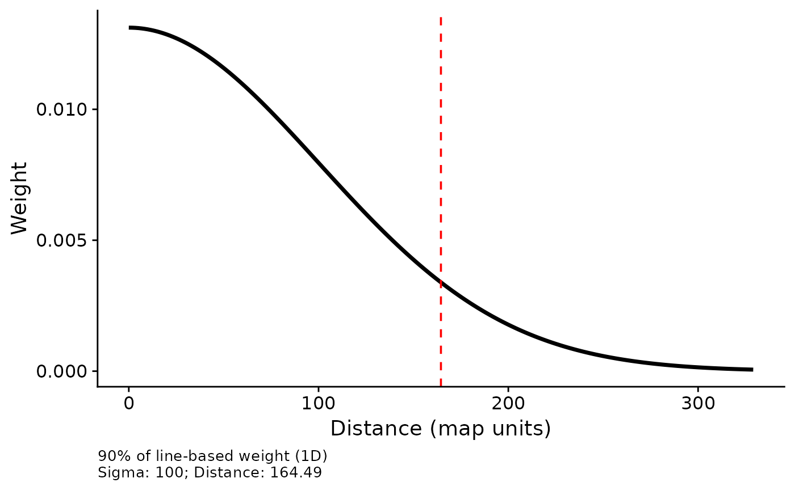

Visualizes the weight (density) of a kernel function as a
function of distance, without requiring a fitted multiScaleR object.
Useful for exploring how different kernel types and sigma values translate
into spatial influence zones before running multiScale_optim.
To plot the kernel from a fitted model, use plot(opt) instead.
Usage
plot_kernel(
prob = 0.9,
sigma,
beta = NULL,
kernel,
scale_dist = TRUE,
add_label = TRUE,
dimension = c("2d", "1d"),
...
)Arguments
- prob
Numeric between 0 and 1 (exclusive). Proportion of ideal kernel weight enclosed by the marked distance under the selected
dimension. Default:0.9.- sigma
Positive numeric. The scale parameter of the kernel, in the same units as the projection used with
kernel_prep(e.g., meters when using a metric CRS). Controls the width of the kernel: larger values spread influence over greater distances.- beta
Positive numeric. Shape parameter for the exponential power kernel (
kernel = "expow"). Controls kernel shape: values near 1 approximate a Laplace (double-exponential) shape; values near 2 approximate Gaussian; larger values approach a flat-top (platykurtic) shape. Typical range is 1–50. Ignored for all other kernel types. Default:NULL.- kernel
Character. The kernel function to visualize. One of:
"gaussian"Gaussian (normal) decay; weights follow a half-normal density with standard deviation
sigma."exp"Negative exponential decay; weights follow
exp(-d / sigma)."fixed"Fixed-radius step function; all distances up to
sigmareceive equal weight."expow"Exponential power kernel parameterized by
sigmaandbeta.
- scale_dist
Logical. If
TRUE(default), a vertical dashed line marks the distance enclosingprobof kernel weight under the selected dimensional definition.- add_label
Logical. If
TRUE(default), a caption reports the cumulative percentage, dimension, sigma, and effective distance below the plot. Requiresscale_dist = TRUE.- dimension
Character.
"2d"(default) marks the radius enclosingprobof ideal kernel weight on a plane."1d"restores the original distance enclosing that proportion along a line through the point.- ...
Not used.
Value
A ggplot2 object showing kernel weight (y-axis) as a function
of distance in map units (x-axis), returned for display or customization.
Details
The curve shows relative weight assigned to a cell at each distance,
normalized over the plotted sample distances. It is not the distribution of
total weight in concentric rings. Under the default "2d" definition,
the marker accounts for ring area (proportional to distance), so the area
under the displayed curve to its left is not prob.
The x-axis covers at least 99.9% of weight under the selected definition,
or prob when larger. Marker positions use the unrounded distance;
labels round to two decimal places. Sigma remains a kernel parameter, not
the marked radius. For a Gaussian kernel with sigma = 300 m, the 90% marker
is about 644 m in 2D and 493 m in 1D.
Development versions after 0.7.3 default to 2D; use
dimension = "1d" to reproduce the original distance definition.
These are ideal continuous-kernel distances, not site-specific retained
weight after max_D, raster boundaries, missing cells, or cell geometry
limit the extraction. See kernel_dist for both definitions.
For fitted-model kernel plots (with confidence intervals), use
plot(multiScaleR_object) instead.
Examples
## Default: radius containing 95% of ideal planar weight
plot_kernel(prob = 0.95,
sigma = 100,
kernel = 'gaussian')

plot_kernel(prob = 0.95,
sigma = 100,
kernel = 'exp')

plot_kernel(prob = 0.95,
sigma = 100,
kernel = 'fixed')

plot_kernel(prob = 0.95,
sigma = 100,
beta = 2.5,
kernel = 'expow')

## Original line-based definition
plot_kernel(sigma = 100, kernel = 'gaussian', dimension = '1d')
